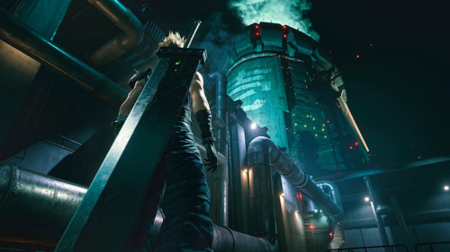
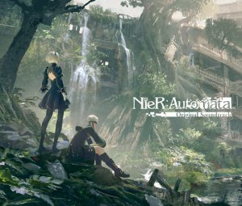
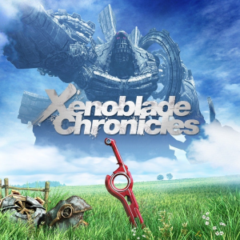

final fantasy vii playlist

The Black Mages - Those Who Fight Further FFVII
october 2, 2010
final fantasy vii track list
- track 1 | Those Who Fight Further - Nobuo Uematsu remix by the black mages
- track 2 | Let the Battles Begin! - Nobuo Uematsu
- track 3 | Aerith's Theme - Nobuo Uematsu
you may also like
nier automata playlist

xenoblade chronicles playlist
